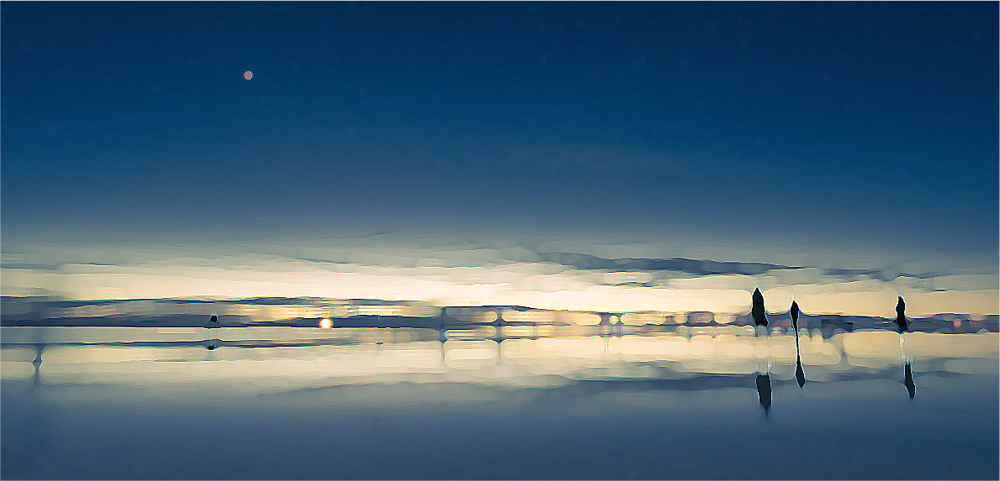

1
「君は黎明の海を見たことがあるか」
上の文を見て、あなたは咄嗟に何を想像しただろうか？問いに対しての返答を浮かべたかもしれないし、記憶の中の近い風景を思い浮かべたかもしれない。はたまたブラウザを開き、黎明について調べようとした可能性もあるだろう。
情報化の一途を辿る現代社会では、海のように広大な情報に極めて手軽にアクセスが可能になった。言葉を調べるのに紙の辞書はいらず、見たことのない風景の想像を手助けしてくれる写真はそこら中で公開されている。一人あたりに情報が伝わる速度が早くなったことでその一人はすぐさま次の情報を得ることができるようになり、また空いた時間で別の誰かもその情報を手に取ることができるようになった。
デザイナーやクリエイターを目指す我々にも等しく最新の情報を得られる機会が与えられ、より顧客に刺激的で新しいものを提供できる。提供できるということは即ち我々もそれを受けることができ、得たものを昇華させ仕事・あるいは趣味としての形を与えて再び誰かへとその情報は回っていく。循環する水のように。
2

恩恵は数え切れず
インターネットが我々にもたらしてくれたものは便利な辞書としての機能だけではない。
例えばリモートで行うことが可能になった様々な作業。時間帯の制約を受けなくなった連絡手段。自分の技能や作品をアピールする場としてSNSはこの上なく便利だと言えるだろう。新商品の宣伝も発売日の告知も、あるいは購入することすらも、店舗に足を運ばず家の中でくつろいでいるだけでできる。同じゲームをするのに誰かの家に集まる必要はなくなり、それぞれがそれぞれの自宅にいながらにして隣で同じ映画を観ているように楽しむこともできる。もはや今晩の夕食のメニューを決めることさえ、自分の頭を使わなくてもいい時代だ。これを読んでいるあなたは、もうすでにそれらのサービスを使えないことについて苛立ちを覚え始めているかもしれない。
一方で運送業者の仕事はより重要視されパンクするほどに膨れ上がり、短時間でより多くの情報が扱えるようになったということは短時間でより多くの仕事をする必要になったということでもあるが、そういったデメリットを差し引きしても余りあるほどの恩恵を受けているというのが事実だろう。
3
感覚質はそこにある
上に挙げたのはあくまでも一例で、私個人はインターネットとは扱う人間の利用用途によってどんな形にでも姿を変えるもの、器によってどんな形状でも取れる水のようなものだと感じている。
その差異が生じるのはひとえに見識云々の問題ではなく、周辺の環境や世代の問題等の様々な要因があり、正解があるものとは言えない。これはインターネットに限定せずとも、何かの情報を扱う上では必ず発生するものだからだ。どのような情報をどのような手段で得て、どういった扱いをし何を思考するか。文字情報だけではなく我々は常に五感からなにがしかの情報を得て、各々で異なったクオリアを感じ過ごしているのだ。
故にこれから行う提案は必ずしもあなたの楽しい時間を約束できるわけではないが、あなたがもし代わり映えのないSNSの様子や似た内容ばかりの短い動画に飽き飽きしているのなら、少なくともそれらのためのスパイスにはなると約束しよう。
4
無用の長物ではない
インターネット接続が切れた端末を見て、何か気づいたことはないだろうか。日頃よく使うアプリケーションの他に、フォルダの奥底で眠らせるままになっているファイルはないか？ダウンロードしたきり開いていない本や映画は？あなたの興味関心・好奇心によって手元に引寄せられたまま、それらは日の目を見る日を今か今かと待ち続けている。そう、今こそ彼らを目覚めさせてやるときである。
知識欲を満たす術は検索ツールに頼るばかりではない。あなたの身近な場所に、これまで気づかなかった”面白いもの”はたくさん転がっているはずだ。集中力を削ぐ広告も友人からのチャットの通知もない今なら、それらをより深く、時間をかけて楽しむことができる。
5
deep deeper yet deeper
波打つ水面のように絶えず流れる情報は、我々の生活に大きな変革をもたらした。数多くの情報が飛び交い、そしてそれらを何一つとして自分のメモリー──USB, HDD, あるいは頭蓋骨の中身──に保存する必要がない。全てはオンラインのサーバーに保存され、その場への行き方さえ記録しておけばあとはいつでも好きなときに覗きに行ける。世界が変わりゆく中、一個人がインターネットを断とうなどと考えるのはあまり得策とは言えない。であるからこそ、今一度、我々は広大な海の中でどのようにして過ごしているかという自覚を持つべきなのではないか。
海上は広大で、眩く、それでいて魅力的な煌めきを常に我々に見せてくれる。目蓋を閉じてもその光は皮膚を透かすほどだ。そしてただ海上を漂うばかりで与えられる情報に、我々は自ら暗い深海へ潜るということをやめてしまったのではないだろうか。深く、もっと深く、より深くへと行く術を、我々はいつでも内に有している。
6
流れ、浮かび、漂う
インターネット接続がない状態でも、何も常に別の手段で情報を得続けている必要はない。身体を動かす、書類を書く、何かを作る、部屋の掃除をする。きっと学生諸兄らに潰すための暇な時間などありはしないことだろう。そもそも時間を潰すとはどういうことなのだろうか。例えば待ち合わせに友人が遅れてくる、あなたはどこか手近な喫茶店にでも入る。そこでコーヒーを注文して席に着いたとしても、あなたは即座に携帯を開いてまた何がしかの情報を得始めるに違いない。
しかしこの情報を得ている時間というのは、フェアベーンの論文集を読み、それについて考察している時間とはまるで異なる。あなたが選んだ情報でも、そうでない情報でも、浅瀬の波のようにそれらはあなたの目の前を滑り落ちていく。情報の群れは刹那的に浮かんでは消え、あなたの中に保存されることはなく、またインターネットの水面を流れてゆく。
7
インプットということ
デザインの学徒として学ぶあなた方は、「インプット」と「アウトプット」という言葉を使ったことがあるはずだ。しかし、果たしてインプットとは、漫然と水面を揺蕩い浅瀬で水遊びをすることを指すのだろうか。
手で掬い上げ目で見ただけの情報は、隙間だらけの器に入れたそばから漏れ出てしまうようなものだ。記録するという点においては、我々のメモリー装置はコンピューターのそれに劣る。ただ惰性的に情報を流すのではなく、少し深く潜って得る情報を選別しながら自分の中に記憶として落とし込む。さらには自己の内面により深く潜り込み、情報を精査し、それらから何を得たのか考える。機械学習と我々ヒトの違いは、情報を0と1の羅列として記録するのではなくそこに感情を、あるいは感覚質を結び付けられる点にあるのだと私は考える。
8
illettrismeとanalphabétisme
我々が一般に用いる「文盲」は読み書きも自分の名前を書くことすらもできないという定義であるが、世界の識字・非識字の定義を見ると一概にそうとも言えない。フランスでは前述の文盲(analphabétisme)のほかに機能的非識字(illettrisme)がある。illettrismeは初歩的な読み書きは行え、自分の名前を書くことができ、最新の映画の広告ポスターを問題なく理解することができても、社会で生活する上で必要な文章が理解できないことを指す。
「1899年においては成年男子の23.4%は文字を読むことができず、20歳識字率は76.6%にとどまっていたが、その後識字率は急速に上昇し、1925年には20歳非識字率はわずか0.9%、機能的非識字者を合わせても1.7%にまで減少した」という文を目にしても、1899年から1925年にかけて20歳非識字率が何%低下したかということが読み取れない。
しかし彼らは「成年男子」「文字を読むことができず」「急速に上昇し」といった部分部分の単語の読みがわからないというわけではない。眼前を流れていく情報を自己メモリーに留めおくことができず、連続した意味を持つ情報として結び付けられていないのだ。
9
頭を開いて
遠い国の話だと思っただろうか。否、私たちにとってもすぐ背後に迫った現実的な問題と言えるだろう。それが事実だという証拠に、我々はSNSの台頭とともに他者と意思の疎通を図ることの難しさをより一層知ることとなった。深く潜るということを忘れたが最後、行き着く先は情報を見つめながらにして何も得ることのできないillettrismeなのかもしれない。
火の起こし方を知らずとも、ガスコンロのスイッチを押せ、ライターやマッチの扱い方を知る我々にとって、それは問題にはならない。マッチの組成やコンロの内部構造を知らないことについて、「火を起こせる」という結果が生じる以上誰が問題とするだろうか。インターネットが我々の生活に多大な恩恵を与えているということについてもそれと同様である。しかし頭を開き、思考を止めず、自分自身を頼りに情報を扱うことこそが、任意の情報を当たり前に手に入れることのできる現代をより楽しく過ごすためのヒントになると言えるはずだ。
10

知っているだけでは物足りない
情報と情報が結びつき繋がり合う時の快感。マドレーヌと紅茶の香りから蘇る、堆積した記憶の奥深くの感情。文字情報からは得られないそうしたものたちは、自身の中に深く潜ることで初めて手に入る。煩雑な情報に慣れきった目や耳は初めのうちは思考をまとめようとしないかもしれない。しかしそれも1日、3日、7日と時間を重ねればより深いところまで潜り込めるようになっていく。
この体験は何にも代えがたいものであり、あなた自身が頭を開かない限り外部から提供されるものではない。得なかったことで損失が発生するわけでも問題が起きるわけでもないが、愛すべき無駄の一つとして大切に扱うべきものがあれば、あなたの日々は彩を増し鮮やかなものになるだろう。